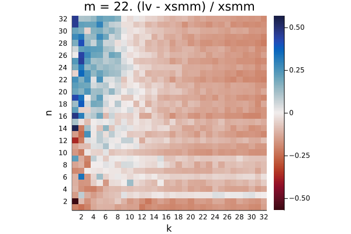
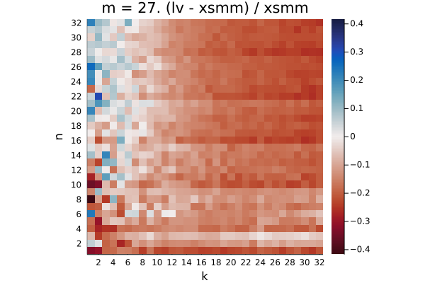

haswell
The plots show the relative difference in runtime (LoopVectorization.jl - libxsmm) / libxsmm for every (m, n, k) triplet. Negative / red values are better for LoopVectorization.jl, positive / blue values are better for libxsmm.

Q₁ = -0.206. Q₂ = -0.088. Q₃ = 0.749

Q₁ = -0.184. Q₂ = 0.149. Q₃ = 0.917

Q₁ = -0.405. Q₂ = -0.322. Q₃ = 0.003

Q₁ = -0.193. Q₂ = -0.127. Q₃ = -0.083

Q₁ = -0.027. Q₂ = 0.185. Q₃ = 0.443

Q₁ = -0.274. Q₂ = -0.064. Q₃ = 0.265

Q₁ = -0.531. Q₂ = -0.487. Q₃ = -0.368

Q₁ = -0.144. Q₂ = -0.097. Q₃ = -0.052

Q₁ = -0.174. Q₂ = -0.100. Q₃ = 0.174

Q₁ = -0.204. Q₂ = -0.151. Q₃ = -0.067

Q₁ = -0.396. Q₂ = -0.339. Q₃ = -0.247

Q₁ = -0.016. Q₂ = 0.032. Q₃ = 0.052

Q₁ = -0.128. Q₂ = -0.088. Q₃ = 0.009

Q₁ = -0.130. Q₂ = -0.086. Q₃ = -0.005

Q₁ = -0.317. Q₂ = -0.268. Q₃ = -0.189

Q₁ = 0.094. Q₂ = 0.143. Q₃ = 0.169

Q₁ = 0.003. Q₂ = 0.044. Q₃ = 0.112

Q₁ = 0.005. Q₂ = 0.042. Q₃ = 0.085

Q₁ = -0.193. Q₂ = -0.150. Q₃ = -0.095

Q₁ = -0.005. Q₂ = 0.032. Q₃ = 0.075

Q₁ = -0.147. Q₂ = -0.101. Q₃ = -0.021

Q₁ = -0.146. Q₂ = -0.101. Q₃ = -0.025
Q₁ = -0.295. Q₂ = -0.245. Q₃ = -0.158

Q₁ = -0.010. Q₂ = 0.028. Q₃ = 0.064
Q₁ = -0.061. Q₂ = -0.019. Q₃ = 0.039

Q₁ = -0.059. Q₂ = -0.018. Q₃ = 0.035

Q₁ = -0.200. Q₂ = -0.154. Q₃ = -0.089

Q₁ = 0.081. Q₂ = 0.142. Q₃ = 0.177

Q₁ = -0.067. Q₂ = -0.032. Q₃ = 0.024

Q₁ = -0.063. Q₂ = -0.027. Q₃ = 0.022

Q₁ = -0.195. Q₂ = -0.155. Q₃ = -0.085

Q₁ = 0.065. Q₂ = 0.103. Q₃ = 0.128